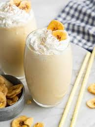

Banana Milshake recipe
Home

Description
A delicious banana shake to try if you don't have a lot of time or ingredients! Cinnamon and sugar can be omitted.
Ingredients
- 3 ice cubes
- 1 cup milk
- 1 banana
- 1 tablespoon white sugar, or to taste
- 1 pinch ground cinnamon
Steps
- Gather all ingredients.
- Combine ice, milk, banana, sugar, and cinnamon in a blender; blend until smooth.